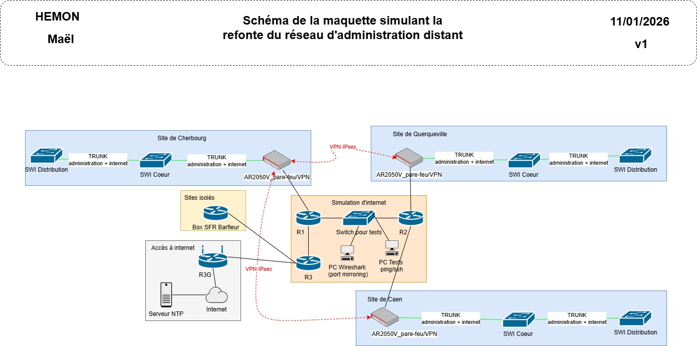

Mission 3 – Maquette de refonte reseau d’administration
septembre 2025 – Aujourd’hui
C1 – Administrer
C4 – Securiser
Cette mission consiste a creer une maquette simulant un reseau d'administration distant pour les equipements reseaux afin de realiser la refonte du reseau actuellement existant.
Contexte et objectifs
- Administration a distance
- Securisation des donnees
Taches realisees
- Mise en place d'un internet simule pour etablir les VPNs IPsec
- Mise en place de plusieurs VPN IPsec permettant la liaison des sites distants
- Securisation des communications avec internet via regles de pare-feu (filtrages)
- Schema de la maquette reseau
Competences mobilisees
- C1 : administration de services reseaux
- C4 : securisation des echanges et acces
Trace

Analyse reflexive
Cette mission a particulierement ete fastidieuse pour moi car je n'avais jamais travaille sur des VPNs IPsec auparavant. J'ai du apprendre a configurer ces VPNs en lisant de la documentation et en testant differentes configurations sur la maquette. Cela m'a permis de mieux comprendre le fonctionnement des VPNs et l'importance de la securisation des communications dans un reseau d'administration.